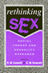
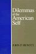
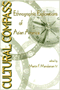

|
Doing
Comparable Worth
Gender, Class, and Pay Equity
Acker,
Joan
Jessie Bernard Prize of the American Sociological Association
for Life Achievement, 1989
Career of Distinguished Scholarship Award, American Sociological
Association, 1993 |

|
Hegemony
The New Shape of Global Power
Agnew, John
Outstanding Academic Title, Choice, 2005 |

|
Rave Culture
The Alteration and Decline of a Philadelphia Music Scene
Anderson, Tammy L.
Charles Horten Cooley Award, 2010 |

|
Conceiving Masculinity
Male Infertility, Medicine, and Identity
Barnes, Liberty Walther
British Sociological Association's Foundation for the Sociology of Health and Illness Book Prize, 2015
|

|
Closure
The Rush to End Grief and What It Costs Us
Berns, Nancy
Honorable Mention from the Sociology of Emotions section of the American Sociological Association, 2012
Charles Horton Cooley Award for Best Book from the Society for the Study of Symbolic Interaction, 2013 |

|
Revising
State Theory
Essays in Politics and Postindustrialism
Block,
Fred
Socialist Review Book Award, Socialist Review, 1987 |

|
Disability and Passing
Blurring the Lines of Identity
edited by Brune,Jeffrey A. and Daniel J. Wilson
Contributor Dea H. Bolster, won the Disability History Association Award for Best Book Chapter, 2015 |

|
The End of White World Supremacy
Black Internationalism and the Problem of the Color Line
Bush, Roderick
Paul Sweezy Marxist Sociology Award from the American Sociological Association conference, 2010 |

|
On the Margins of Citizenship
Intellectual Disability and Civil Rights in Twentieth-Century America
Carey, Allison C.
Scholarly Achievement Award, North Central Sociological Association, 2010 |

|
Rethinking
Sex
Social Theory and Sexuality Research
edited
by Connell, R. W. and G. W. Dowsett
Sex and Gender Section Award for Distinguished Contribution
to the Study of Sex and Gender, American Sociological Association,
1995 |

|
Deviance
and Medicalization
From Badness to Sickness
Conrad,
Peter and Joseph W. Schneider
Charles Horton Cooley Book Award, Society for the Study of
Symbolic Interaction, 1981 |

|
Politics
and the Class Divide
Working People and the Middle Class Left
Croteau,
David
Finalist for Transformational Politics Book Award, American
Political Science Association, 1996 |

|
Cultural
Politics and Social Movements
edited
by Darnovsky, Marcy, Barbara Epstein and Richard Flacks
Outstanding Academic Book, Choice, 1996 |

|
Drug Smugglers on Drug Smuggling
Lessons from the Inside
Decker, Scott H. and Margaret Townsend Chapman
Outstanding Academic Title, Choice, 2008 |

|
Something
Left to Lose
Personal Relations and Survival among New York's Homeless
Dordick,
Gwendolyn A.
Outstanding Academic Title, Choice, 1997 |

|
Nuclear
Power and Social Power
Eckstein,
Rick
Outstanding Academic Title, Choice, 1997 |

|
Asian
American Panethnicity
Espiritu,
Yen Le
Outstanding Book Award, Association for Asian American Studies,
1994
Outstanding Academic Title, Choice, 1994 |

|
Growing
Up with Television
Everyday Learning Among Young Adolescents
Fisherkeller,
JoEllen
Outstanding Academic Title, Choice, 2002 |

|
The Textures of Time
Agency and Temporal Experience
Flaherty, Michael G.
Charles Horton Cooley Award for Best Book from the Society for the Study of Symbolic Interaction, 2012 |

|
In
Transit
The Transport Workers Union in New York City, 1933-1966
Freeman,
Joshua B.
Co-winner of the Taft Book Award, 1989 |

|
Weaving
Work and Motherhood
Garey,
Anita Ilta
William J. Goode Book Award, American Sociological Association
Family Section, 2000 |
|
Rethinking
Rental Housing
Gilderbloom,
John I. and Richard P. Appelbaum, foreword by Joe R. Feagin
Robert E. Park Award, American Sociological Association,
1989 |

|
A
World without Words
The Social Construction of Children Born Deaf and Blind
Goode,
David, foreword by Irving Kenneth Zola
Co-winner of the John Horton Cooley Book Award, Society for
the Study of Symbolic Interaction, 1995 |
|
I
Wanna Be Me
Rock Music and the Politics of Identity
Gracyk,
Theodore
Co-Winner of the International Association for the Study
of Popular Music Book Award, 2002 |

|
Jookin'
The Rise of Social Dance Formations in African-American Culture
Hazzard-Gordon,
Katrina
Honorable Mention of the De La Torre Bueno Prize from the
Dance Perspectives Foundations, 1991 |

|
Dilemmas
of the American Self
Hewitt,
John P.
Charles Horton Cooley Award of the Society for the Study
of Symbolic Interaction, 1990 |

|
From Black Power to Hip Hop
Racism, Nationalism, and Feminism
Hill Collins, Patricia
Honorable Mention at the Gustavus Myers Outstanding Book Awards, 2006 |

|
Second Cities
Globalization and Local Politics in Manchester and Philadelphia
Hodos, Jerome I.
Kenneth Jackson Best Book Award from the Urban History Association, 2011 Outstanding Academic Title, Choice, 2012 |
|
The White Savior Film
Content, Critics, and Consumption
Hughey, Matthew W.
Southwest Sociological Association Outstanding Publication Award, 2016
|

|
Another Arabesque
Syrian-Lebanese Ethnicity in Neoliberal Brazil
Karam, John Tofik
Arab American National Museum Book Award in the Adult Non-Fiction Category, 2007
Winner of the Roberto Reis BRASA Book Award, 2008 |

|
Movements in Times of Democratic Transition
edited by Klandermans, Bert and Cornelis van Stralen
Outstanding Academic Title, Choice, 2015 |

|
Women
of the New Right
Klatch,
Rebecca E.
Victoria Schuck Award, American Political Science Association,
1988 |

|
Dominican Baseball
New Pride, Old Prejudice
Klein, Alan
Outstanding Book Award from the North American Society for the Sociology of Sport, 2015 |

|
Making
Equity Planning Work
Leadership in the Public Sector
Krumholz,
Norman and John Forester, foreword by Alan A. Altshuler
Paul Davidoff book of the year award from the Associated
Collegiate Schools of Planning, 1990 |

|
Engineering
Culture
Control and Commitment in a High-Tech Corporation
Kunda,
Gideon
Culture Section Book Award, American Sociological Association,
1994 |

|
New
Social Movements
From Ideology to Identity
edited
by Lara�a, Enrique, Hank Johnston and Joseph R. Gusfield
Outstanding Academic Book, Choice, 1995 |

|
Comprehending Columbine
Larkin, Ralph W.
Outstanding Academic Title, Choice, 2009 |

|
The Death and Life of the Single-Family House
Lessons from Vancouver on Building a Livable City
Lauster, Nathanael
Canadian Sociological Association's John Porter Tradition of Excellence Book Award, 2017
|

|
Family
Ties
Enduring Relations between Parents and Their Grown Children
Logan,
John R. and Glenna D. Spitze
William J. Goode Distinguished Book Award, Sponsored by the
Family Section of the American Sociological Association, 1997 |

|
Undocumented Fears
Immigration and the Politics of Divide and Conquer in Hazleton, Pennsylvania
Longazel, Jamie
North Central Sociological Association's scholarly achievement awards, 2017
|

|
Cultural
Compass
Ethnographic Explorations of Asian America
edited
by Manalansan, IV, Martin F.
Cultural Studies Book Award, given by the Association for
Asian American Studies, 2000 |

|
Caribbean
Currents
Caribbean Music from Rumba to Reggae
Manuel,
Peter with Kenneth Bilby and Michael Largey
Outstanding Academic Books, Choice, 1996
Gordon K. Lewis Memorial Award for Caribbean Scholarship, Caribbean
Studies Association, 1996 |

|
Financialization of Daily Life
Martin, Randy
Randy Martin is the recipient of the American Sociological Association's Marxist Sociology Lifetime Achievement Award, 2015 |

|
Knowledge LTD
Toward a Social Logic of the Derivative
Martin, Randy
Randy Martin is the recipient of the American Sociological Association's Marxist Sociology Lifetime Achievement Award, 2015 |

|
Under New Management
Universities, Administrative Labor, and the Professional Turn
Martin, Randy
Randy Martin is the recipient of the American Sociological Association's Marxist Sociology Lifetime Achievement Award, 2015 |

|
Pentecostal
Catholics
Power, Charisma, and Order in a Religious Movement
McGuire,
Meredith B.
Distinguished Book Award from the Society for the Scientific
Study of Religion, 1982 |

|
The
New Left Revisited
edited
by McMillian, John and Paul Buhle
Outstanding Academic Title, Choice, 2003 |
|
Street
Woman
Miller,
Eleanor M.
Distinguished Scholar Award, American Sociological Association
Criminology Section, 1987 |

|
Homeboys
Gangs, Drugs, and the Prison in the Barrios of Los Angeles
Moore,
Joan W.
Winner of the Sidney Spivack Award, 1980 |

|
Blue Juice
Euthanasia in Veterinary Medicine
Morris, Patricia
Midwest Sociological Society Distinguished Book Award, 2015 |

|
Dangerous
Passage
The Social Control of Sexuality in Women's Adolescence
Nathanson,
Constance A.
Eliot Freidson Outstanding Book in Medical Sociology, American
Sociological Association, 1993 |

|
Shifting
Borders
Rhetoric, Immigration, and California's Proposition 187
Ono,
Kent A. and John M. Sloop
Critical and Cultural Studies Division of the National Communication
Association's Book of the Year Award, 2004 |

|
Behind the Backlash
Muslim Americans after 9/11
Peek, Lori
Midwest Sociological Society Distinguished Book Award, 2012
Best Book Award from the American Sociological Association's (ASA) section on Altruism, Morality, and Social Solidarity, 2013 |

|
A City within a City
The Black Freedom Struggle in Grand Rapids, Michigan
Robinson, Todd E. Outstanding Academic Title,
Choice, 2013
Chosen as the Grand Rapids Mayor's Book of the Year, 2016 |

|
Understanding
Dogs
Living and Working with Canine Companions
Sanders,
Clinton R.
Charles Horton Cooley Award, Society for the Study of Symbolic
Interaction, 2000 |

|
Laotian Daughters
Working toward Community, Belonging, and Environmental Justice
Shah, Bindi V.
Association for Asian American Studies' Outstanding Book Award in the category Social Science, 2014
Honorable Mention, Asia and Asian America Section of the American Sociological Association, 2013 |

|
Veils
and Daggers
A Century of National Geographic's Representation of the
Arab World
Steet,
Linda
The American Educational Studies Association (AESA) Critics'
Choice Award, 2001 |

|
Starting
Out
Class and Community in the Lives of Working-Class Youth
Steinitz,
Victoria Anne and Ellen Rachel Solomon
Robert E. Park Award, American Sociological Association,
1987 |

|
Nisei/Sansei
Shifting Japanese American Identities and Politics
Takahashi,
Jere
Honorable Mention for Outstanding Books Awards, Gustavus
Myers Center for the Study of Bigotry and Human Rights in
North America, 1997 |

|
The
Gold Standard
The Challenge of Evidence-Based Medicine and Standardization in
Health Care
Timmermans,
Stefan and Marc Berg
Winner of the Robert
Merton Professional Book Award from the Science, Knowledge,
and Society section of the American Sociological Association for
the best book published in the past three years in the area of science
studies, 2005 |

|
Sudden
Death and the Myth of CPR
Timmermans,
Stefan, foreword by Bern Shen
Nominated for the C. Wright Mills Book Award, 2000 |

|
Mobilizing an Asian American Community
V�, Linda
Trinh
Social Science Book Honorable Mention, Association for Asian American
Studies, 2006 |

|
Of Others Inside
Insanity, Addiction, and Belonging in America
Weinberg, Darin
Melvin Pollner Prize in Ethnomethodology by the American Sociological Association Section on Ethnomethodology & Conversation Analysis, 2011 |

|
Feminist
Generations
The Persistence of the Radical Women's Movement
Whittier,
Nancy
Outstanding Academic Title, Choice, 1995 |

|
Inner Speech and the Dialogical Self
Wiley, Norbert
Co-winner of the Society for the Study of Symbolic Interaction's
Charles Horton Cooley Book Award, 2017
|

|
Livestock/Deadstock
Working with Farm Animals from Birth to Slaughter
Wilkie, Rhoda M.
British Sociological Association's Philip Abrams Memorial Prize for the Best First and Sole-Authored Book within the discipline of Sociology, 2011
Award for Distinguished Scholarship in the Animals and Society Section of the American Sociological Association, 2011 |

|
No More Invisible Man
Race and Gender in Men's Work
Wingfield, Adia Harvey
Distinguished Book Award from the American Sociological Association's (ASA) section on Race, Gender and Class, 2014
Richard A. Lester Prize from the Industrial Relations Section at Princeton University, 2014 |

|
The Delinquent Girl
edited by Zahn, Margaret A.
Outstanding Academic Title, Choice, 2009 |